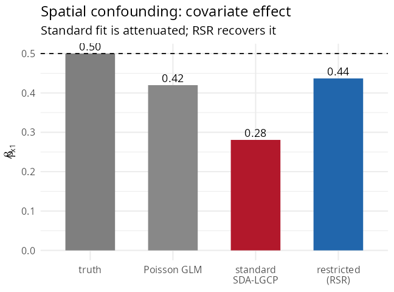

5. Spatial confounding and restricted spatial regression
Source:vignettes/spatial-confounding.Rmd
spatial-confounding.RmdWhen a covariate is itself spatially structured (a north–south gradient, distance to a city, deprivation), it is collinear with the spatial random effect. The random effect then absorbs the covariate’s signal, and the estimated coefficient is attenuated with inflated variance. This is spatial confounding (Reich, Hodges & Zadnik 2006; Hughes & Haran 2013).
Seeing the problem
Simulate counts where a spatially smooth covariate x1
has a true effect of 0.5, on top of a spatial field:
library(SDALGCP2)
library(sf)
# ... regions with a gradient covariate x1, offset pop, simulated cases ...
coef(glm(cases ~ x1 + offset(log(pop)), poisson, st_drop_geometry(regions)))["x1"]
fit_std <- sdalgcp(cases ~ x1 + offset(log(pop)), data = regions)
fit_std$beta_opt["x1"]The standard SDA-LGCP fit attenuates the coefficient because the spatial term has eaten part of the gradient:

#> truth 0.50
#> Poisson GLM 0.42
#> standard SDA-LGCP 0.28 <- attenuated by confounding
#> restricted (RSR) 0.44The fix: restricted spatial regression
Constrain the spatial random effect to the orthogonal complement of the fixed-effect design, so it cannot reproduce any covariate. Turn it on with one control argument:
fit_rsr <- sdalgcp(cases ~ x1 + offset(log(pop)), data = regions,
control = sdalgcp_control(confounding = "restricted"))
summary(fit_rsr)SDALGCP2 builds an orthonormal basis K of
null(Dᵀ), replaces the random effect by Kα
(which is orthogonal to every column of the design), and fits the
restricted model by a Laplace-approximate marginal likelihood. The
coefficient is now identified by the data, not by the spatial smoothing,
and the spatial term only captures the residual structure. Full
derivation: math/confounding-and-misalignment.pdf.